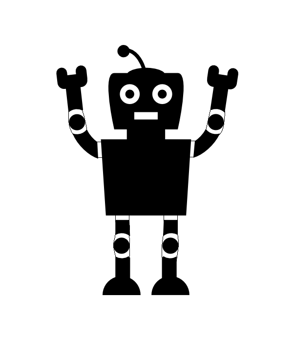
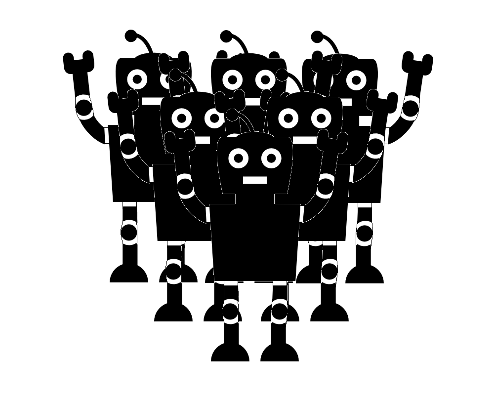

This is the project for the course Multi-Agent systems in the academic year 2016-2017 by Sjaak ten Caat, Denny Diepgrond, and Stefan Knegt.
Problem Outline
For our project, we will be looking at a short story by Isaac Asimov called Little Lost Robot. In this story the main character, Susan Calvin, is tasked with finding a robot among multiple almost identical other robots. The robot she is looking for, is trying to hide actively. This robot, called NS-2, uses all of its knowledge about the other robots to make sure that it reacts in exactly the same way as they do. What is known to everyone is that every normal robot will follow the three laws of robotics, namely:
A robot may not injure a human being or, through inaction, allow a human being to come to harm.
A robot must obey the orders given it by human beings except where such orders would conflict with the First Law.
A robot must protect its own existence as long as such protection does not conflict with the First or Second Laws.
However, NS-2 has been modified in such a way that the First Law only states "A robot may not injure a human being" but will still react in such a way as it thinks other robots will react. Finally, NS-2 is different from other robots due to additional education in that it can distinguish between different types of radiation, for instance between harmless infrared and gamma radiation, which is lethal to robots but safe for humans. It does not realize that the other normal robots do not know the difference.
In the end Susan solves the problem as follows: she tells each of the robots separately that gamma radiation will destroy a robot within only a few steps. They are then kept isolated from each other, so that they cannot communicate. Each robot is placed in a large room, with walls between them so that they cannot see each other but they can see the center of the room. This room is filled with infrared radiation. Susan sits in a chair at the center, and once all the robots are in position a large weight is dropped down from above the chair and bumped away from the chair at the last second. Only NS-2 moves from his position, before realizing that none of the other robots moved, and Susan has found her robot.
The reason that this worked is that the other robots could not distinguish between different types of radiation. They all thought that they would be unable to rescue Susan before being destroyed by the perceived gamma radiation and so did not act at all. NS-2 however saw that the radiation was safe and thought that the other robots would act in accordance with the First Law, and so was the only robot that did act.
Theory
In the 'Little Lost Robot' story we can identify three separate agents: Susan, the lost robot and the normal robots. The normal robots are all exact duplicates so it is irrelevant how many there are for the purpose of this analysis. Therefore we will only consider one. Let Susan be agent S, the lost robot be agent L, and the normal robot be agent N. Since the story deals with what agents believe, rather than what they know, we used the KD45 system. So we define the model to be used as $M = \langle S, \pi, R^B_S, R^B_L, R^B_N\rangle$.
We define the propositional atoms as
$Gr$ = gamma radiation is present
$Ir$ = infrared radiation is present
$Dr$ = dangerous radiation (for robots) is present
$Hd$ = the situation is dangerous for humans
$La$ = the lost robot acts
$Na$ = the normal robot acts
The initial situation is as follows:
$M\models C (Hd \leftrightarrow Na)$ : It's common knowledge that normal robots will act if and only if a human is in danger.
$M\models C (B_L(Na) \rightarrow La)$ : It's common knowledge that, whenever the lost robot thinks that the normal robot will act, it will also act.
$M\models C (B_L(\neg Na) \rightarrow \neg La)$ : It's also common knowledge that when the lost robot believes that the normal robot will not act, it will also not act.
Susan's goal is to find one or more announcements that will result in either the lost robot acting without the normal robot, or the normal robot acting without the lost robot, so that she can identify them. This is not yet possible with the current set of formulas.
Then, Susan tells each robot about the effects of radiation, which adds the following formulas:
$M \models C((Hd \land \neg Dr) \leftrightarrow Na)$ : Normal robots will only act if someone is in danger when there is no dangerous radiation present, since they will not be able to do anything before being destroyed. This rule replaces the very first rule.
$M \models B_L (Gr \leftrightarrow Dr)$ : The lost robot believes that gamma radiation and only gamma radiation counts as dangerous radiation.
$M \models B_N ((Gr \lor Ir) \leftrightarrow Dr$ : The normal robot believes that every type of radiation is dangerous radiation, since they cannot distinguish between different types.
$M \models B_L (B_N (Gr \leftrightarrow Dr))$ : The lost robot believes that the normal robot also believes that it only needs to be aware of gamma radiation.
$M \models B_S (B_N ((Gr \lor Ir) \leftrightarrow Dr))$ : Susan believes that normal robots cannot distinguish between infrared and gamma radiation.
$M \models B_S (B_L (B_N (Gr \leftrightarrow Dr)))$ : Susan also believes that the lost robot believes that the normal robot believes that it is only in danger when there is gamma radiation.
In the resulting models, we can obtain Susan's goal state, $B_S(Na \land \neg La) \lor B_S(\neg Na \land La)$ as follows:
$$[Hd \land Ir]B_S(\neg Na \land La)$$
Simulation
The epistemic situation in the above-mentioned story of the Little Lost Robot is simulated below. By using the switches, the user can make propositional atoms that were mentioned in the Theory section either true or false. After changing one or more switches, a new model can be generated by clicking the button. In the grey boxes, the epistemic atoms that are true for a particular agent are shown. There also is a box with general knowledge in which the common knowledge in the model is shown. The truth valuations for all agents are based on the initial situation and the formulas given in the Theory section.
At this moment, the simulation can represent the three experiments Susan conducted to find the lost robot in the original story.
The first experiment she comes up with consists of all the robots seeing a an human about to be crushed by a weight. This corresponds with switching the $Hd$ switch to true. Now NS-2 does not have to save the human but does anyway since it beliefs the normal robots will do just that and it does not want to get discovered.
The second experiment Susan comes up with is very similar to the first one, the only difference is that a beam of gamma radiation can now be found between the robots and the human. This corresponds with switching at least one of the $Dr$ and $Gr$ switches to true. Because the First Law (save humans) is more powerful than the Third (save yourself), the normal robots should leap to save the person, even if it means their death. The lost robot however, lacks the "save humans" command, so it should be ruled by the Third Law and stay seated. Nevertheless, all robots now do nothing since one of the robots has pointed out that they couldn't save the human and if they stayed seated, they might save a human sometime in the future.
After this, Susan runs the third experiment as explained in the Problem outline. This experiment entails switching the $Hd$ and $Ir$ switches to true, leading to Susan finding out which robot is the little lost robot.
General
Lost Robot

Normal Robot

Susan
Extended Simulation
General
Lost Robot
Normal Robot
Susan
Epistemic Analysis
We model theory of mind-properties for the agents with the KD45 system and added beliefs. The idea of bridging cognitive science and logic, by using dynamic epistemic logic to model theory of mind is not new (Verbrugge, 2009). Pol et al. (2016) used dynamic belief updates in a computational-level model of theory of mind. This way they formalize the aspect of theory of mind regarding the attribution of mental states. In the model they focus on epistemic states, in particular on belief. Our model is based on their approach. The most important difference is that in our model, the belief updates will not be based on sequences of actions but on public announcements that change the beliefs of the agents.
Kripke Model
In the figures below, Kripke models are shown that display the epistemic situation corresponding to the current state of the simulation.
Legend
The Normal Robot's internal Kripke modelThe Lost Robot's internal Kripke modelSusan's internal Kripke model
The main challenge when constructing the Kripke model is the large amount of worlds that could be considered. As there are 6 axioms, which could each be true or false, there are $2^6=64$ possible worlds. However,
many of these worlds are irrelevant considering the general knowledge of the agents. For instance, in a world where gamma radiation is true, everyone believes that the radiation is dangerous to the robots, and so
none of the robots will act. So there are only two relevant worlds where gamma radiation is true, one where a human is in danger, and one where a human is not in danger. By eliminating irrelevant worlds like so, we
ended up with the 8 worlds shown in the legend, which prove sufficient for illustrating the change of the believes for each agent over the course of the story.
Future plans
This is a list of ideas we have to expand our project:
Simulation design is not yet to our satisfaction. Pictures need to be updated scaled and we are planning on displaying the knowledge in a more visual way.
We have to upgrade the Theory and Problem outline sections with the Asimov, Meyer and van Ditmarsch references.
When this first draft is acceptable, we intend to focus on the expansion of the story and the complexity of the simulation. This can be done by for example adding the option to increase the amount of agents.
At this moment the Simulation follows the structure of the original little lost robot story. If this proves to be not complex enough, we can always add things to the story that increases the complexity of the epistemic situation.
References
Isaac Asimov. Little lost robot. Astounding Science Fiction, 39(1):111–132, 1947.
J-J Ch Meyer and Wiebe Van Der Hoek. Epistemic logic for AI and computer science, volume 41. Cambridge University Press, 2004.
Hans Van Ditmarsch, Wiebe van Der Hoek, and Barteld Kooi. Dynamic epistemic logic, volume 337. Springer Science & Business Media, 2007.
Pol, I., I. J. E. I. van Rooij, and J. Szymanik. "Parameterized complexity results for a model of theory of mind based on dynamic epistemic logic." (2016).
Verbrugge, Rineke. "Logic and social cognition." Journal of Philosophical Logic 38.6 (2009): 649-680.